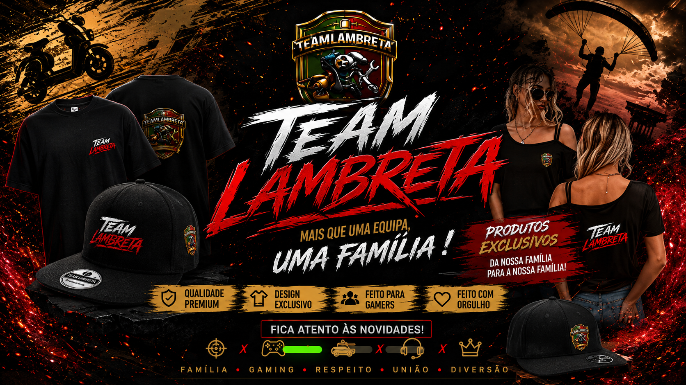

TEAM LAMBRETA
Uma família dentro e fora do jogo.
Comunidade, competição e conteúdo unidos pela mesma identidade. Conhece quem faz parte desta história.
Comunidade, competição e conteúdo unidos pela mesma identidade. Conhece quem faz parte desta história.


Descobre os tópicos recentes, partilha ideias e acompanha a comunidade.
Abrir Fórum →Acompanha as mudanças mais recentes do site.
Ver atualizações →Perfil, presença, contactos e mensagens privadas em toda a experiência V102.
Abrir Buddy →Abre a sala Team Lambreta com player + chat da live.